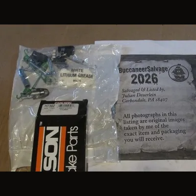
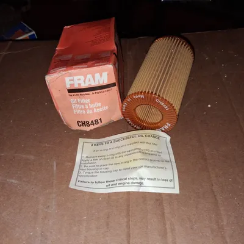
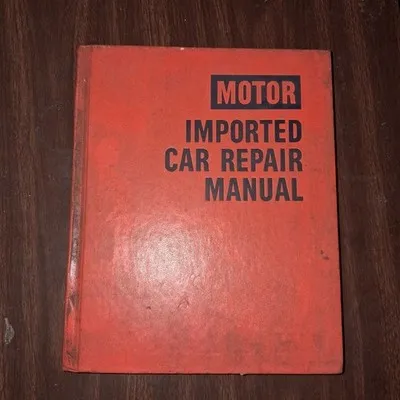
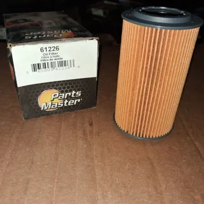
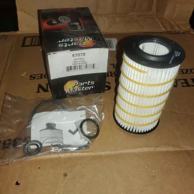

Ignition Points
1966-1979 KEM W8 Ignition Points Volkswagen Beetle Volvo 244 BMW 2002 2000 1800
W8
Fits 1966-1967 Mercedes-Benz 200 · 1972-1973 Mercedes-Benz 220 (742 listed)
$21.99
View details10 parts whose listing names at least one Mercedes-Benz vehicle, mostly oil filters, ignition & tune-up and caliper pin & guide kits. Fit depends on year, model and engine, so check the full vehicle list on each part page or message us before you buy.
10 parts
Online checkout through Square. Ships from Carbondale, PA, or pick up by confirmed appointment only. Fitment question? Message us.
W8
Fits 1966-1967 Mercedes-Benz 200 · 1972-1973 Mercedes-Benz 220 (742 listed)
$21.99
View details
W2037
Fits 1978 Mercedes-Benz 230 · 1981-1998 Volkswagen Jetta (477 listed)
$12.99
View details
H5093
Fits 2010-2018 Mercedes-Benz Sprinter 3500 · 2018 Mercedes-Benz Sprinter 3500XD (795 listed)
$12.99
View details
H7302
Fits 1998-2003 Mercedes-Benz ML320 · 2003-2005 Mercedes-Benz ML350 (884 listed)
$20.99
View details
CH8481
Fits 2001-2005 Mercedes-Benz C240 · 2001-2005 Mercedes-Benz C320 (44 listed)
$14.99
View details
Fits 1978 Mercedes-Benz · 1978 Honda
$12.99
View details
61226
Fits 2007-2008 Mercedes-Benz CLK280 · 2009 Mercedes-Benz GLK280 (21 listed)
$12.99
View details
67078
Fits 2007-2011 Mercedes-Benz S550 · 2007-2009 Mercedes-Benz CLS550 (38 listed)
$12.99
View details
ZX603A
Fits 1992-1993 Mercedes-Benz 300SD · 1992-1993 Mercedes-Benz 300SE (91 listed)
$40.99
View details
51088
Fits 1985-1993 Mercedes-Benz 190E · 1987-1989 Mercedes-Benz 260E (16 listed)
$19.99
View details